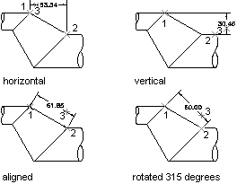

Autodesk AutoCAD 2021: ActiveX Developer's Guide > Dimensions, Leaders, and Geometric Tolerances > About Creating Dimensions (VBA/ActiveX) >
Linear dimensions allow you to label the distance between two points.
Linear dimensions can be aligned or rotated. Aligned dimensions have the dimension line parallel to the line along which the extension line origins lie. Rotated dimensions have the dimension line placed at an angle to the extension line origins.
To create a linear dimension, use the AddDimAligned or AddDimRotated method. After you create linear dimensions, you can modify the text, the angle of the text, or the angle of the dimension line. In the following illustrations, the extension line origins are designated explicitly. The resulting dimension line location is also shown:

To create an aligned dimension, use the AddDimAligned method. This method requires three coordinates as input: the origin of both extension lines and the text position.
To create a rotated dimension, use the AddDimRotated method. This method requires three coordinates and the angle of the dimension line as input. The three coordinates are the origin of both extension lines and the text position. The angle must be provided in radians and represents the angle of rotation for the dimension line.